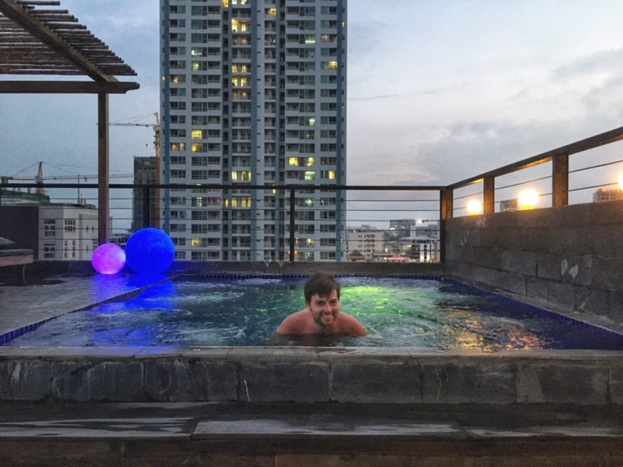
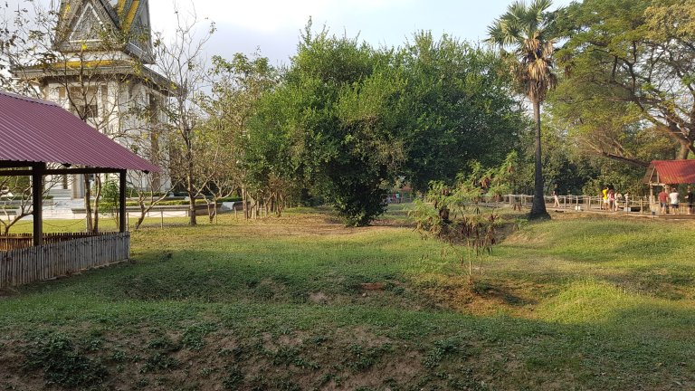
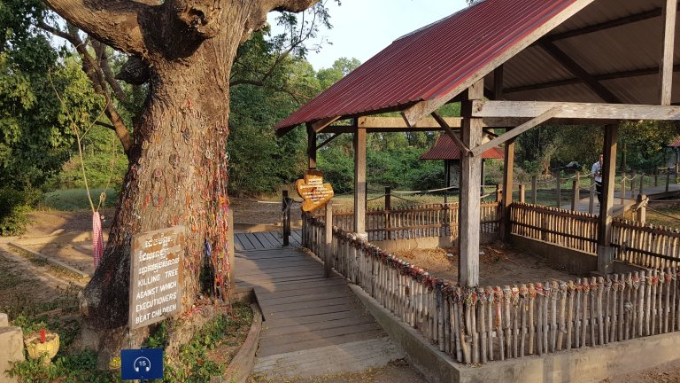
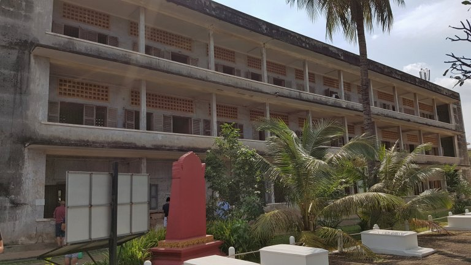

Il nostro corto soggiorno a Phnom Penh (corto perché purtroppo non stavamo ancora bene, e dunque non siamo riusciti a visitare molto la città) è stato principalmente dedicato alla visita di due punti d’interesse riguardanti la storia recente della Cambogia.
Sunset @ Balconitel rooftop pool nella vivace e colorata Phnom Penh.
Killing Fields
Il memoriale di Choeung Ek si trova a pochi chilometri dalla capitale cambogiana.
Qui, negli anni ’70, i Khmer rossi instaurarono uno dei tantissimi campi di sterminio (killing fields) dedicati all’uccisione dei cambogiani appartenenti a quello che loro chiamavano “il nuovo popolo“.
Nel corso dei pochi anni durante i quali i Khmer rossi detenevano il potere in Cambogia, più di 2 milioni di persone vennero uccise brutalmente in campi simili a quello che abbiamo visitato. Le vittime di questo genocidio erano appunto “il nuovo popolo“, ovvero coloro che vivevano in città e gli istruiti (insegnanti, architetti, medici, meccanici ecc).
La visita di Choeung Ek ci ha illustrato quanto successe in quel periodo tramite testimonianze di sopravvissuti (tramite l’audio guida), descrizioni di quanto succedeva in varie zone del campo e tramite la vista di molteplici fosse comuni in cui sono state sepolte le vittime.
Nell’immagine sopra potete infatti vedere come la presenza di fosse comuni si manifesti ora tramite delle depressioni nel terreno. Osservando attentamente queste fosse, passando per il campo, siamo riusciti più volte a vedere dei brandelli di vestiti fuoriuscire dal terreno, vestiti indossati dalle vittime al momento dell’uccisione, e che pian piano risalgono in superficie.
Era incredibile e terrificante come, nonostante la consapevolezza di quanto accadde in questo posto solo qualche decennio fa, ora vi regnava una tranquillità che era difficile trovare nella città: alberi in fiore, paperette e galli che camminavano sui prati (vecchie fosse comuni) e silenzio.
In quest’immagine trovate una fossa comune (ora protetta da una tettoia) in cui sono stati ritrovati donne e bambini. Siccome le vittime da uccidere erano talmente tante (fino a 500 al giorno), i Khmer rossi usavano tecniche brutali ma economiche per togliere la vita. L’albero sulla sinistra, infatti, era uno “strumento di morte“: veniva usato dai soldati Khmer rossi per uccidere i piccoli prendendoli per le caviglie e sbattendoli sul legno duro.
Traffico Cambogiano
Qui un estratto rappresentativo del traffico cambogiano.
Tuol Sleng S21
Una volta scuola nel mezzo della città, questo edificio è stato adottato dai Khmer rossi come una prigione e luogo di tortura.
Qui infatti venivano rinchiusi i “nemici dei Khmer rossi“, ovvero il “nuovo popolo“.
Le aule della scuola vennero sfruttare dai Khmer rossi come luoghi per torturare i prigionieri. Qui venivano forzati a firmare delle testimonianze in cui ammettono la loro colpevolezza per crimini mai avvenuti contro il regime dei Khmer rossi. Queste testimonianze avrebbero giustificato la loro uccisione o spedizione ai campi della morte.
Comment Section